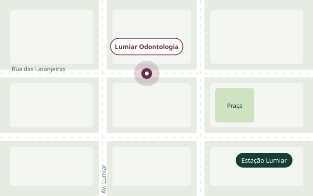

Dentista no Lumiar, com horário que cabe na sua semana.
Três dentistas, um consultório com luz natural e agenda aberta até as 19h. Você escolhe o horário aqui e recebe a confirmação na hora, sem ligar para ninguém.
- Seg a sex, 8h às 19h · sáb, 8h às 12h
- Rua das Laranjeiras, 214
Tratamentos
Valores de referência para pagamento particular. O orçamento final sai na avaliação.
Como é a primeira consulta
-
Conversa
O que incomoda, o que você quer mudar e o seu histórico. Sem pressa.
-
Exame e foto intraoral
A câmera mostra na tela o que o dentista vê. Você entende cada indicação.
-
Plano por escrito
Etapas, prazos e valores num documento que você leva para casa e decide com calma.
Equipe
Agendar consulta
Leva um minuto. Você pode remarcar ou cancelar por aqui mesmo.
Minhas consultas
Ficam salvas neste aparelho.
Convênios e pagamento
Atendemos
- Amil Dental
- Bradesco Dental
- OdontoPrev
- SulAmérica Odonto
- Porto Seguro Odonto
Particular
Pix com 5% de desconto, cartão em até 10 vezes sem juros e boleto para tratamentos acima de R$ 1.500.
Ortodontia tem mensalidade fixa, sem taxa de manutenção escondida.
Dúvidas comuns
Clareamento dói?
Pode dar sensibilidade nos primeiros dias. Usamos gel dessensibilizante antes e indicamos o creme dental certo para a fase do tratamento.
Com que idade a criança deve ir ao dentista?
Quando nasce o primeiro dente, ou até o primeiro aniversário. A primeira visita é quase uma brincadeira.
Vocês atendem urgência?
Sim, em horário comercial. Dor forte, dente quebrado ou inchaço: chame no WhatsApp que encaixamos no mesmo dia.
Preciso levar algum exame?
Se tiver radiografias recentes, traga. Se não tiver, fazemos aqui quando for necessário.
Onde estamos
Rua das Laranjeiras, 214 · Lumiar
A duas quadras da estação, com estacionamento conveniado.
